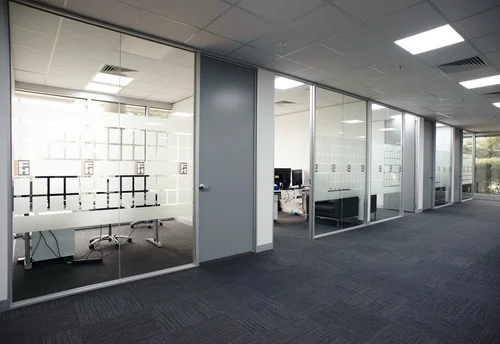
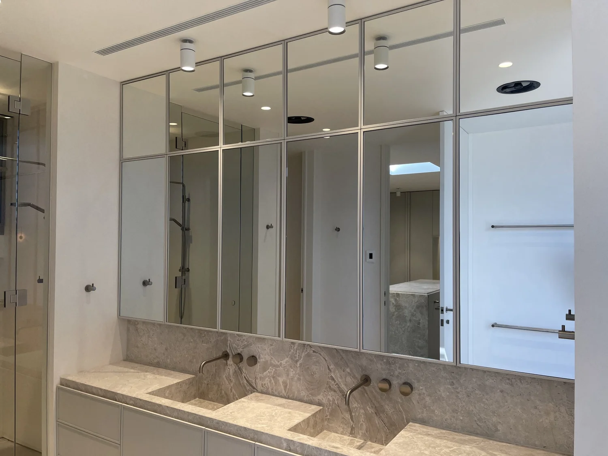
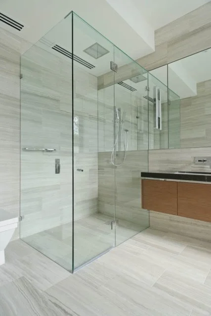
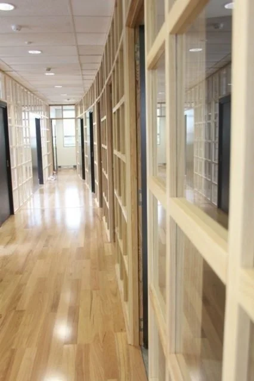

Gym mirrors & studio wall mirrors
Large wall mirror packages for gyms, fitness studios, pilates rooms, change rooms and commercial amenities.
Gym mirror work →Anderson Glass & Glazing helps builders, shopfitters, gyms, offices and homeowners across Melbourne with commercial glazing, wall mirrors, office partitions, shopfront doors, shower screens and replacement glass.
Clear quoting, practical measuring, safe glass selection and tidy installation. Send photos and rough sizes first — Ben can usually tell you quickly what information is missing.
Large wall mirror packages for gyms, fitness studios, pilates rooms, change rooms and commercial amenities.
Gym mirror work →Commercial glass replacement, fit-out glazing, shopfront panels and toughened/laminated safety glass.
Commercial glazing →Glazed office fronts, meeting rooms, partition glass, privacy film coordination and clean fit-out finishes.
Office partitions →Door glazing, shopfront glass, commercial entries, laminated make-ups and supplier/door-company coordination.
Doors and shopfronts →Frameless and semi-frameless shower screens, bathroom mirrors and replacement glass for homes and apartments.
Shower screens →Broken panes, commercial maintenance, mirror replacement, safety glass upgrades and practical repair advice.
Glass replacement →
Ben has spent more than three decades around glass, aluminium, commercial doors and fit-outs. The work is practical: measure accurately, understand the frame and hardware, order the right glass, coordinate delivery, and install without creating problems for the builder or tenant.
These examples are based on Anderson Glass job records and public project or location pages. The links are provided as useful context and do not imply endorsement.
Anderson Glass records show mirror and fit-out glazing work across Revo sites including Richmond, Highpoint, Hoppers Crossing, Mentone, Epping, Springvale, Chadstone, Knoxfield, Altona, Braybrook, Frankston and Plenty Valley. Supplier orders include 6mm silver mirror with flat polished edges and large multi-mirror deliveries.
Anderson Glass records describe Marvel Stadium door glazing options, including 180m² of super-clear or clear toughened laminated glass with structural glazing or screw-on bead systems.
Job records include shopfronts, mirrors and commercial door packages for retail and fit-out environments such as major shopping centres, sports stores, commercial offices and display suites.
Anderson Glass regularly coordinates with glass, aluminium and door suppliers so the site work matches the frame, hardware, glass make-up and delivery window.
Existing Anderson Glass project photos. Captions help customers and Google understand what the images show.





Useful public links for the kinds of project environments and supply partners connected with Anderson Glass work.
For the fastest answer, include what the glass is for, a couple of photos, rough height x width sizes, site suburb and timing. For glass dimensions, Ben works height before width.